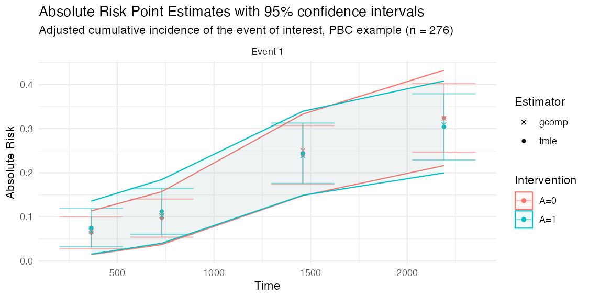

This article is written for trial analysts who want to test
concrete on a randomized trial or trial-like observational
data set. The core output is a covariate-adjusted marginal absolute risk
at prespecified follow-up times. From those risks, concrete
reports risk differences and risk ratios.
What question is being answered?
For a binary baseline treatment, concrete estimates
counterfactual absolute risks such as:
- risk of event 1 by day 365 if everyone followed the active arm
- risk of event 1 by day 365 if everyone followed the control arm
- active minus control risk difference
- active divided by control risk ratio
For competing risks, the estimate is the cumulative incidence of the
target event in the presence of the competing events. For a standard
right-censored survival endpoint with no competing risks, use one
positive event code and code censoring as 0.
Data checklist
Your analysis data set should have one row per participant for the current package interface.
| Item | Requirement |
|---|---|
| Subject id | Unique participant id column |
| Time | Observed event or censoring time, numeric, positive |
| Event type |
0 for censoring, positive integers for events |
| Treatment | Binary baseline treatment coded 0 and
1
|
| Covariates | Baseline covariates measured before treatment |
Check these before fitting:
trial[, .N, by = event]
trial[, .N, by = .(arm, event)]
summary(trial$time)
stopifnot(all(trial$event >= 0))
stopifnot(all(trial$arm %in% c(0, 1)))Current scope:
- baseline binary treatment
- one row per participant
- right-censored event time data
- optional competing risks
- baseline covariate adjustment
Currently out of scope:
- longitudinal treatment regimes
- recurrent events
- left truncation or delayed entry
- non-binary treatment without custom intervention work
Example data
The examples below use survival::pbc only to provide a
complete data shape. Replace this block with your trial data.
library(concrete)
library(data.table)
trial <- as.data.table(survival::pbc)
trial <- trial[!is.na(trt), .(id, time, status, trt, age, sex, albumin, bili)]
# Example treatment coding: 1 = active arm, 0 = control arm.
trial[, arm := as.integer(trt == 2)]
# Example competing-risk coding:
# 0 = censored, 1 = death, 2 = transplant.
trial[, event := data.table::fifelse(
status == 2, 1L,
data.table::fifelse(status == 1, 2L, 0L)
)]
trial <- trial[, .(id, time, event, arm, age, sex, albumin, bili)]Before fitting your own data, you can run the installed smoke test:
source(system.file("examples", "trialist-smoke-test.R", package = "concrete"))This verifies that the package can run a small competing-risk analysis and prints the same kinds of outputs and diagnostics you should inspect in your trial.
First intent-to-treat analysis
Start with a conservative analysis before adding flexible hazard learners. This uses the default treatment Super Learner and default Cox candidate hazards.
ConcreteArgs <- formatArguments(
DataTable = trial,
EventTime = "time",
EventType = "event",
Treatment = "arm",
ID = "id",
Intervention = makeITT(),
TargetTime = c(365, 730, 1095),
TargetEvent = 1,
CVArg = list(V = 5),
Verbose = FALSE
)
ConcreteEst <- doConcrete(ConcreteArgs)
print(ConcreteEst)makeITT() creates two static interventions:
-
A=1: everyone assigned to the active arm -
A=0: everyone assigned to the control arm
This is the usual starting point for an intent-to-treat comparison when the treatment column is the randomized treatment assignment.
Output for a trial report
ConcreteOut <- getOutput(
ConcreteEst,
Estimand = c("Risk", "RD", "RR"),
Intervention = c(1, 2),
GComp = TRUE,
Simultaneous = TRUE
)
ConcreteOut[Event == 1]The table below is the actual TMLE output from this PBC example (event of interest, selected target times). The exact values will change with your data, target times, learner library, and confidence-interval settings.
| Time | Event | Estimand | Intervention | Estimator | Pt Est | se | CI Low | CI Hi | |
|---|---|---|---|---|---|---|---|---|---|
| 9 | 730 | 1 | Abs Risk | A=0 | tmle | 0.097 | 0.022 | 0.054 | 0.140 |
| 11 | 730 | 1 | Abs Risk | A=1 | tmle | 0.112 | 0.027 | 0.061 | 0.164 |
| 13 | 730 | 1 | Rel Risk | [A=1] / [A=0] | tmle | 1.156 | 0.378 | 0.416 | 1.896 |
| 15 | 730 | 1 | Risk Diff | [A=1] - [A=0] | tmle | 0.015 | 0.034 | -0.052 | 0.083 |
| 17 | 1460 | 1 | Abs Risk | A=0 | tmle | 0.241 | 0.034 | 0.174 | 0.307 |
| 19 | 1460 | 1 | Abs Risk | A=1 | tmle | 0.244 | 0.035 | 0.176 | 0.313 |
| 21 | 1460 | 1 | Rel Risk | [A=1] / [A=0] | tmle | 1.015 | 0.204 | 0.615 | 1.416 |
| 23 | 1460 | 1 | Risk Diff | [A=1] - [A=0] | tmle | 0.004 | 0.049 | -0.092 | 0.099 |
| 25 | 2190 | 1 | Abs Risk | A=0 | tmle | 0.325 | 0.040 | 0.247 | 0.402 |
| 27 | 2190 | 1 | Abs Risk | A=1 | tmle | 0.304 | 0.038 | 0.229 | 0.379 |
| 29 | 2190 | 1 | Rel Risk | [A=1] / [A=0] | tmle | 0.937 | 0.165 | 0.614 | 1.259 |
| 31 | 2190 | 1 | Risk Diff | [A=1] - [A=0] | tmle | -0.021 | 0.055 | -0.129 | 0.088 |
plot(ConcreteOut) draws the same estimates as
covariate-adjusted absolute-risk curves by arm, with pointwise error
bars and a shaded simultaneous confidence band:
plot(ConcreteOut, ask = FALSE)
Important columns:
-
Time: target follow-up time -
Event: target event code -
Estimand: absolute risk, risk difference, or relative risk -
Intervention: intervention being estimated or compared -
Estimator:tmleor optionalgcompplug-in estimate -
Pt Est: point estimate -
CI Low,CI Hi: confidence interval
For risk differences, positive values mean the first intervention
listed in Intervention = c(1, 2) has higher risk than the
second. With makeITT(), that is A=1 minus
A=0.
getOutput() also reports a two-sided Wald
pValue for the risk difference and risk ratio, and can run
a one-sided non-inferiority assessment against a margin:
Restricted mean survival time and life-years lost
Because the hazard ratio is non-collapsible and depends on
proportional hazards, many trials report a restricted mean survival time
(RMST) instead. getRMST() integrates the targeted
cumulative incidence over the follow-up horizon, so request a reasonably
dense TargetTime grid when you plan to use it.
# RMST (event-free time) and cause-specific life-years lost, with the
# between-arm difference in restricted mean times:
getRMST(ConcreteEst, Horizon = 1095, Intervention = c(1, 2))The RMST Diff row is the difference in mean event-free
time up to the horizon (e.g. “extra days alive and event-free under the
active arm”); LYL Diff rows are the cause-specific
differences in time lost.
getRMST() integrates the pointwise-targeted risks, so it
needs a reasonably dense TargetTime grid. If you only fit a
few target times, or you have rare events or a long horizon,
targetRMST() targets the RMST estimating equation
directly (fluctuating the hazards for the integrated
clever covariate) and is better conditioned:
targetRMST(ConcreteEst, Horizon = 1095, Intervention = c(1, 2))How much did covariate adjustment buy you?
Covariate adjustment does not change the estimand in a randomized
trial, but it can tighten the confidence intervals. Fit an unadjusted
(treatment-only) version and compare with
getRelativeEfficiency():
unadj_args <- formatArguments(
DataTable = trial, EventTime = "time", EventType = "event", Treatment = "arm",
ID = "id", Intervention = makeITT(), TargetTime = c(365, 730, 1095),
TargetEvent = 1, CVArg = list(V = 5),
Model = list(arm = "SL.mean",
"0" = list(Cox = survival::Surv(time, event == 0) ~ arm),
"1" = list(Cox = survival::Surv(time, event == 1) ~ arm))
)
unadj_est <- doConcrete(unadj_args)
getRelativeEfficiency(
Adjusted = getOutput(ConcreteEst, Estimand = c("Risk", "RD"), Intervention = c(1, 2)),
Unadjusted = getOutput(unadj_est, Estimand = c("Risk", "RD"), Intervention = c(1, 2))
)RelEfficiency above 1 and a positive
VarReductionPct mean adjustment was worth it: a value of
1.25 says the adjusted analysis on these n participants has
the precision of an unadjusted analysis on 25% more.
Compare with familiar analyses
Use standard analyses as context, not as exact substitutes. A Cox hazard ratio is not the same estimand as a marginal risk difference or cumulative incidence risk ratio.
# Event counts by arm are always the first check.
trial[, .N, by = .(arm, event)]
# Cause-specific Cox model for the event of interest.
cox_event1 <- survival::coxph(
survival::Surv(time, event == 1) ~ arm + age + sex + albumin + bili,
data = trial
)
summary(cox_event1)
# Kaplan-Meier style context for a non-competing-risk endpoint.
# For competing risks, prefer a cumulative incidence estimator in your usual
# trial reporting workflow and compare target times to ConcreteOut.
km_event1 <- survival::survfit(
survival::Surv(time, event == 1) ~ arm,
data = trial
)
summary(km_event1, times = c(365, 730, 1095))Useful comparison questions:
- Are event counts and censoring patterns plausible by treatment arm?
- Are
concreteabsolute risks close to unadjusted estimates in a balanced trial? - Do adjusted estimates move in the expected direction when important prognostic covariates are included?
- Are the TMLE estimates and g-computation plug-in estimates close?
- Are confidence intervals wider in rare-event settings?
Check convergence
components <- getTmleDiagnostics(ConcreteEst, type = "components")
components[order(ratio, decreasing = TRUE)][1:10]
trace <- getTmleDiagnostics(ConcreteEst, type = "trace")
traceFor a clean fit, the component diagnostics should have
check = TRUE for all targeted components under the selected
stopping rule. A compact success summary from the smoke test looks
like:
| analysis | status | converged | step | max_ratio | failing_components |
|---|---|---|---|---|---|
| cox_only | ok | TRUE | 4 | 0.743 | 0 |
If the fit does not converge, try the settings in the convergence diagnostics article before changing the estimand.
ConcreteArgs$UpdateMethod <- "adaptive"
ConcreteArgs$EICStopRule <- "absolute"
ConcreteArgs$EICStopAbsTol <- 0.02 / sqrt(nrow(ConcreteArgs$Data))
ConcreteArgs <- formatArguments(ConcreteArgs)
ConcreteEst <- doConcrete(ConcreteArgs)
getTmleDiagnostics(ConcreteEst, type = "components")What to share when testing
When sharing results with collaborators or opening a GitHub issue, include:
- package version from
packageVersion("concrete") - event counts by treatment arm
- target event and target time
- learner library used in
Model - TMLE controls:
UpdateMethod,EICStopRule,EICStopAbsTol getTmleDiagnostics(ConcreteEst, type = "components")- whether the issue reproduces with the conservative Cox-only analysis